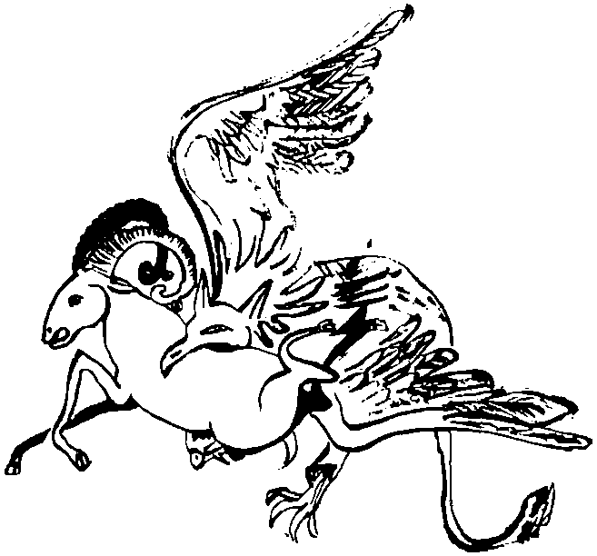

Sorulan sorunun tuzak niteliğinden dolayı, öykü uzun sürmüştü. Argun’un sorusundaki “biz Türkler” ibaresini nasıl yorumlayacağına Albız bir süre karar verememişti. Kendisi yaradılıştan başlayarak anlatabilirdi de, karşısındaki ölümlü canları düşünmüştü. Sonunda, Altaylardan Anadolu’ya, kanıtlanmış hiçbir tarihi göç olmadığı için Hazarların öyküsünden başlayarak anlatmaya karar vermişti. Anlatı sırasında duydukları, gördükleri, dokunabildikleri, koklayabildikleri, hatta dayanamayıp İdil boylarının tuzlu balıklarından tattıkları için, heyecan içinde olan Argunların, Tengere’nin son at sürüşü sahnesine kilitlendikleri sırada Albız yere diz çöktü.
Tuhaf gözlerinin pınarlarında açık sarı yaşlar vardı. Yorulmuştu da yalnızca ondan mı ağlıyordu? İçini acıtan bir şey mi vardı, bir şey mi hatırlamıştı anıların derinliğinde? Bilinmez. Gerçek olan bir şey vardı. O soğuk ocak akşamında Albız, annesinden azar işiten küçük albızlar nasıl ağlarsa öyle ağlıyordu. Gözyaşlarının kızıl yüzünden yuvarlanıp yere damlamasına, canlıymış gibi, taş zemin üzerinde değişik yönlere kaçışıp yitmesine aldırmadı.
Maddeye yapışan ışık tanelerinden ikisi daha kurtulmuş, ışığın kaynağına dönmüştü. Dünyanın kabuğu uzaklarda, çok uzaklardaki bir okyanusun tabanında kıpırdadı, deprendi. Argunlar, Albız’ın öyküsünün her paragrafında biraz daha boşaldığını, biraz daha güçsüzleştiğini, anlattıkça kendini tükettiğini tabii ki bilemezdi. “Aman bilmesinler de” diye düşündü Albız. Başka bir iletişim düzeyine geçti. Öyküye başladığından beri kapalı duran ağzını açtı, canlı, babacan, kıpır kıpır güçlü bir sesle konuşarak suskunluğunu bozdu:
“Oğullar biraz soluklansam olur mu?”
Argunlar bu sesten irkildiler. Selcük’ü düşünde atlar ile konuşurken bırakıp bu dünyaya geri geldiler. Dolayısıyla kil duvara çöküp ağladığını da görmediler, ilk konuşan, her zamanki aceleciliğiyle Tankut oldu. Neredeyse bir çığlık atarak:
“Demek Aktürklerin büyük sırrı bu! Büyük Selçuklu devletinin kurucusu bir Musevi, belki de Yahudi. Üstelik bir kadın! Olacak şey değil, ama kendi gözümüzle gördük! Biz Ester Kira’nın ne denli önemli olduğunu, Aktürk diye bir hadisenin olmadığını, öyle geçinenlerin Yahudi olduğunu veya bu memlekette birazcık biti kanlanan, sesi çıkan herkesin Yahudi olduğunu göstermeye çalışırken, şu açığa çıkan olguya bak! Bunu yazmazsam ölürüm! Bugün Türkmenistan’da başta olan, Türk ve Müslüman görünen Yahudi fraksiyonunu da açıklar bu! Demek ki Ruhname bunlara karşı yazılmış! Demek ki o günlerden kalmışlar! Sağ ol, var ol Dede!”
Argun Afaki damadına ters ters bakarak:
“Sayın Albız, minnettarız. Bu Hazar bağlantısı ne zamandır benim de kafamı kurcalıyordu. Bize ilginç bir öykü anlatımız. Belki de oturup Judeo-Türk tarihini bu ışık altında yeniden yazmak gerekecek. Daha çok sorularımız var, sizin de sanırım anlatacak daha bin küsur yılınız. Örneğin, Alparslan’ın neden Anadolu’yu biz Türklere vatan yapmakta biraz gönülsüz davrandığını oldum olası merak ediyordum. Malum, üstat Filistin fethine giderken ancak Romanos Diogenes’in saldırısı üzerine yolunu değiştirerek, neredeyse istemeye istemeye savaşmıştır Malazgirt’te. Şimdi düşünüyorum da, acaba o da bir Birinci İsrailci miydi? Tengere’den sonra budun içinde o görüş mü ağır bastı? Şu Urum’a göçme işi tavsadı mı? Üstelik, yendiği adamı serbest bırakıp, yine Doğu’ya döner, Anadolu’ya sırt çevirir. İhanet gibi bir aymazlık bu, değil mi? O kadar ki, sonradan İran’da ve Turan’da kuyrukları sıkıştığı için bir ‘rezerv devlet’ olarak Türkiye’yi kurmaları, Kutalmış oğlu Solomon’u Anadolu’ya göndermeleri, hatta müthiş bir şaşırtmacayla, etnik bağlantılarını dahi değiştirip kendilerine ‘Rum Selçukluları’ demeleri bile bu ilk tutumlarını silmez. Disiplin içinde bir davranıştır. Tabii öykünüzde inanılması imkânsız noktalar da var. Benim bilimsel kafam pek almıyor. Örneğin, nasıl oluyor da Hazar ile Oğuz’un arası şu giyim kuşam işi ve tulumun içine peynir koyup koymama hikâyesi yüzünden bozuluyor? Hemen bir saplama yapayım, dilimiz ‘g’ sesini sevmez. Zorla, diktatoryanın bir diktası olarak kullanır. Oğuz da, ‘Oz’ demektir. Türkçede hiç anlamı yoktur. Çok şeyi de açıklar. Neyse, nasıl oluyor da Hazar başravlığı böyle bir enayilik yapıyor? Koca bir toplumda böyle, kim ne giydi ne çıkardı, kim ne yedi ne içti gibi kıytırık gerekçelerle kamplaşma olabilir mi? Bunun muhakkak ekonomik bir temeli olması gerekir... Ya da doğrudan bir devlet politikasıdır. Judeo-Türkik devletin bugün inananlarını bir emirle tesettüre sokması gibi bir şeydir. Üniversite kapılarına türban barikatları kurarak, onomastique biliminin üniversiteye girmesinin engellenmesine benzer!”
Afaki, daldan dala, atlaya zıplaya konuşurken Albız’a hafakanlar basıyordu.
“Hay canımı diğer albızlar alsın. Alsınlar da kurtulayım! Ne ettim de bu yorulmak usanmak bilmeyen araştırma âşığı adamların eline düştüm! İstifa edecem, dönecem dış uzaya, başka birini göndersinler! İflahımı kesti bunlar benim...” diye düşündü.
Argun Afaki, ilgi dolu bir tavırla konuşmasını sürdürüyordu:
“Sonra efendim, bizim kendi has kabilemiz hakkında hiçbir şey söylemediniz. Ünlü Argunluğ kabilesi ve bu kabilenin ilk kez yerleşik ve ister istemez oligarşik düzene geçtiği Argunluğ kenti hakkında tek söz etmediniz! Oysa ilkokul çocukları bile bilir, Oğuzların Yengikent, Cend, Sabran, Sütkent, Atlığ, Ordu, Balaç, Barçınlığ gibi nice kentleri vardı. Hah işte Barçınlığ’dan bir yüz kilometro kadar sağ kolda gidin, Argunluğ karşınızda. Sizin bunu bilmemeniz imkânsız Sayın Albız! Belki sesli-görüntülü-kokulu anlatınızın ikinci bölümünde değineceksiniz. Uuu, bu arada anında bir keşif yaptım! Sayın Albız! Size burada ters gelen bir şey yok mu? Bu ‘sayın’ sözcüğünde? Düpedüz Sion bu yahu! Bak, ‘Sayın Hazar’ filan da diyor, dönmek istiyorlardı. İzninizle ben bu Selanik komplosuna alet olmayayım, el övünmesin, hah... hah... Size bundan sonra ‘muhterem’ diye hitap edeceğim efendim. Bu arada başka söylemediğiniz bir konu daha var. Ha-Leviler hakkında hiçbir şey söylemediğiniz dikkatimi çekti. Ağzımız ‘h’ sesini de sevmez, daha önceki bir araştırmamda on yedi kez söylemiştim bunu. Dolayısıyla ‘Hazar’ değil, ‘Azar’ okunmalı. Azra ve Azerbaycan ile olan ilişkileri araştırılmalı. Koskoca Azerbaycan’ın adı sümsük bir satraptan gelemez. Muhakkak, Hazar-Peçenek konfederasyonunun bir anısı olmalı bu: Azarbicene! Arap alfabesindeki ‘y’, ‘i’ diye de okunur, ‘y’ diye de. Bir tercihtir. Neyse şimdi dağılmayalım, toplayalım seçelim, seçicidir bilim! Ben, bizim Alevi yurttaşlarımızın Levi soyundan geldiğini düşünüyorum epeydir. Harun’un çocuklarıdır. Rahip olurlar. O hak onlarındır. Tabii, öyledir illa demiyorum, ama araştırmalı. Benimki nihayet bir tez... Tezin, tazıdan geldiğini söylemiş miydim? Bunların Aktürk veya Hazar İmparatorluğu içindeki sosyo-politik ve iktisadi rolleri neydi acaba? İçimde bir his totemlerinin tavşan olduğunu söylüyor. Başka soydan gelen Tengere’nin bile, tavşana yaktığı ağıttan dolayı, bu soydan olmasından şüpheleniyorum ben! Acaba ana soyu olan Barslanlar, Ha-Levi soyunun bir alt klanı mıydı? Yoksa baştaki ‘bar’ sözcüğünün ima ettiği gibi Slan oğulları, yani ‘a’ düştüğü için ‘arslan oğulları’ mı demek? Bar, Aramcada oğul demek. Uuu, o zaman Tengere hem anne hem baba tarafından Arslan soyundan gelmektedir. Bir tür endogamik durum olmuş. Muhterem Albız, şu ok mok çektiği sahneleri bir kez daha yeniden ve büyüterek görmek mümkün mü? Ben, bu yeni bilgiler ışığında kendisinin altı parmaklı olabileceğini düşünüyorum. Tabii, bu Köktürk balasının başka bir ağıtına bakılırsa, yani bu ağıtlar bir kıstassa, Yavşan klanından da gelebilir! Tavşan veya Yavşan, bunların bu aşamada Sabetayist isimleri olduğunu ileri sürmüyorum, tahlillerimiz sürüyor. Evet, sürprize bakın ki her iki sözcükte bulunan ‘şan’ hecesi ‘Rahşan’da da var. Karadenizli Sabetayistlerimizdendir. Karayoğlan hikâyesini de dikkate alırsanız, müthiştir. Alişan’da da var. Kürt Yahudi’sidir, malum. Bu, o Selanikli akça pakça kızların bu tür adamlara olan şaşırtıcı düşkünlüğünü de açıklar. Bu Alişan’ın ilk hecesinin de İbrani aliyah’dan geldiğini düşünürsek ilginç. Dil, adeta bir Danvinist mucizedir. Klan dedim de... Kayıp kabilelerden hiç söz etmediniz, onların soyundan gelenler nerede acaba bugün? Yok yok, tek tek saymanıza gerek yok. Ülke ülke rica etsem? İyi ki siz çıktınız karşımıza... Malum, Yahudilerde soy anadan gider. Eh, durum böyleyse biz niçin Selçuk’un ya da sizin söylediğiniz şekliyle Selcük’ün kız evlatlarının hiçbirinin adını tarih kitaplarında görmüyoruz? Bu da Sion Protokolü uyarınca bir taktik, bir takiyye olayı mı? Kadın isimleri Sion’un oğlu veya oğulluğu olan tarihçiler tarafından saklanıyor olabilir mi? (Tam bu noktada Josephus ile Meymunides’i hatırlatırım.) Soyları takip edilemesin diye? Vay vay... lsimbilimin ihmal edilmesinin sonuçlandır bunlar! Oysa bilim ayrıntıdadır. Evet, nerede sizin Lior, Raşel, Hulda, Rebeka? Ki bu sonuncunun Selcük’ün şem ha kodeş’i olduğunu öğreniyoruz. Türk-İslam sentezcisi geçinen birtakım sözde tarihçiler fena halde gizlemiş bunları! Açık, açıktır. Bazı Osmanlı sultanlarının da analarının Yah...”
Albız iyice sendeledi. Gizli bilimlerdeki doğal uzmanlığı sayesinde, tam bir konuya adapte olup soruya cevap verebilecek duruma geldiğinde, Afaki’nin bambaşka bir yerde durması ve yeni bir şey sorması kafasını karıştırıyor, konular arasındaki ilişkiyi kuramadığı için, cevap vermek ne söz, gıkı bile çıkamıyordu. Yoksul, tam Barslanların soyunu taa Afrika’daki Büyük Yank’a kadar izlemişken ve sonucu söyleyecekken, kendisinden Tengere’nin ok çektiği sahneleri bulup büyütmesi isteniyordu! Bellek yetersizliğinden dolayı kilitlenmiş bir bilgisayar gibiydi. O bocaladıkça yeni komutlar geliyor: Dosyayı kapa, bunu aç, şu programa gir, yok programı sonlandır, kaydet, etme, verileri kaybedersen et, çık, çık, kendini kapa, kapa kendini! Havada güçlükle tuttuğu işaretparmağını bilinçsizce Argun’un parmağındaki Hayal Taşı’na doğru uzattı. Argun, Albız’ın iyice yorulduğunu kaçırmamış, sorduğu sorulara cevap verilmesini beklemeden konuşmayı sürdürüyordu. Bir yukarıdaki kadar konuştu, isteklerde bulundu. Sonra içinden,
“Seni İblis bozması seni” diyerek, ama dışından,
“Ah... tabii, tüm bunların cevabını şimdi vermek zorunda değilsiniz, biz de zaten bu akşam kayınvalidemlere davetliyiz, isterseniz yarın sürdürürüz. Biraz dinlenin...” diyerek parmağındaki Hayal Taşı’nı Albız’ın işaret parmağına uzattı. Taş çok, çok çekiciydi. Bir Tikkun olayını önlemeyi daha yanda bırakmak pahasına olsa da, Albız taşa dokundu ve yok oldu!
Argun Afaki’nin kahkahası ofiste çın çın öttü. Şaşkınlıkla bakan damadına sevinçle açıkladı:
“Oğlum, tüm yaratıklar dinlenmek, uyumak ister! İyi dağıttık keratayı, değil mi? Albız’a pabuçlarıyla külahını böyle ters giydirirler işte, yieyt lan!”
Sonra Hayal Taşı’nı parmağından çıkardı, ofisindeki dolaplardan birini açtı ve daha iki gün öncesine kadar kâğıt ağırlığı olarak kullandığı ve salt bin dolar bayıldığı için kırılmamasına dikkat ettiği lacivert taşı dikkatle dolabın içindeki çelik kasaya kilitledi. Üç adet koca anahtarı cebine indirdi. Tankut sordu:
“Abi şimdi ne yapacağız?”
“Hiç, bir daha geri çağırmayacağız bu iblisi. Kim bilir nasıl bir gizli gündemi var? Bak, dikkat et, Hayal Taşı olmaya aday birtakım taşları nasıl maharetle araya yerleştiriyor. Urum’dan gelen elçinin armağanları arasında böyle bir şey var, Belkıs’ın yüzüğü dediği, sonra Şaman Yaşıl Kırın eteklerinde böyle ortası delik rengârenk taşlar mevcut! Hepsi tuzak oğlum! Asla itibar etmemek gerek! Bir şeyi saklamaya çalışıyor. Ondandır bu taş hikâyeleri. Sonra, Sarkel sözcüğünün yaptığı sarılık çağrışımlarının ardına gizlediği o beyaz kale imgelemi! Yok güneş altında pırıl pırıl parlıyormuş da daha neler! Ülkemizde hiç okunmayan, ancak dışarıda iyi tanınan bir Sabetaycı yazarın yapıtlarından birine kocaman bir gönderme var burada! Aç gözünü, gör bunları Tankut! Yavrum, bu o hepsinin geldiği Selanik’teki ünlü Beyaz Kule’ye, değirmen taşı büyüklüğünde bir göndermeden başka bir şey değil. Hani, ‘unutmuyoruz vatanımızı’ makamında! Dikkat etmişsindir herhalde, anlatırken ne kadar sarsıldı! Bu ‘anlattığı’ olaylar ve kişilerle kişisel bir bağlantısı olabilir. Ben şahsen bu iblisin, altındaki atın hızından dolayı kanatlanarak başka bir boyuta geçmiş olan Tengere olduğunu düşünüyorum. Ne kadar zorlanırsa zorlansın, bize bir kanıt vücut gösteremedi değil mi? Sonuçta kendi öyküsünde bile kayıp bu Tengere. Öldüyse gövdesi nerede? Hangi cehennem kuyusuna düştüyse yanmış, kavrulmuş, erimiş! Dikkat ettiysen öyküsüne birtakım saplamalar yaparak kendisinin Tengere olamayacağını ima ediyor. Bizi atlatmaya çalışıyor. Örtmek, gizlemek belirli bir çaba ister. Enerjisini dağıtmak durumunda kaldı. O iki sarı damlayı yakalayıp tekrar o uğursuz gövdesine sokamadığını gördün herhalde... Dolayısıyla, her zaman bu kadar şanslı olmayabiliriz! İyi yırttık derim ben.”
“Abi ben o sahneleri kaçırdım. Malum, dün geceki çiçek sulama, bahçıvanlık, tekrar çiçek sulama işleri beni biraz yordu!”
“Oğlum, dikkat isterim! Biz de gençliğimizde ne çiçekler suladık! Asla entelektüel yaşamımı etkilemesine izin vermedim bunların! Bak, patronun olarak değil, abin olarak konuşuyorum. Hatırlatayım: O Kalın Oğuz Elinde kurtlarla boğuşurken tuhaf bir çığlık işittirdi bize. Sonra da karlar üzerinde kırmızı bir kulak gösterdi. Varan bir. ‘Azarların’ varlık kayasını yerinden sökerken de karşısına kulağı kesik bir yiğit çıkardı. Varan iki. Sarkel düşerken ise Güç Kulesi’nden tuhaf çığlıklar işittirdi, bu çığlıklar üzerine Tengere’nin imalı bir düşüncesini bizimle paylaştırdı. Bu da varan üç!”
“Abi ne var bunlarda?”
“Sen bir salaksın Tankut. Bu da varan dört! Lan oğlum biz hiç Tengere ile bu çığlıkları atanı aynı anda, aynı sahnede yan yana, karşı karşıya gördük mü, işittik mi, kokladık mı? Bir kezinde şöyle utangaçça, yarım ağız bir şeyler geveledi. O kadar! Gerisi yok! Türki dünyadan gelse de, kardeşlerimiz arasından çıksa da sonuçta karşımızda bir iblis var. Toprağa, ‘torpak veya tofrak, tufrak’ diyen adamlar bu iblise de doğal olarak llbis, Albıs, Albız diyeceklerdi. Bu tip bir metatez kaçınılmaz. Bilim yanılmaz çocuğum! Evet, tahlilimiz sürüyor, benim varsayımıma göre bu İblis o kadar zeki ki, bize o Karay-azar güreşçisi gibi yemlemeler de yapıyor, çıkmaz sokaklar, tuzaklar hazırlıyor. Hazırlıyor ki, Tengere’nin karşısında o gariban güreşçiyi gördüğümüzde ‘hah tamam, Albız ile Tengere başka varlıklar’ diyelim! Bilim uyumaz genç araştırıcım, bilim horlamaz!”
“Ya kendisinden öğrendiklerimiz?”
“Ee, bugün epey geç oldu. Kendi çözdüğüm sırlardan, yaptığım buluşlardan, geliştirdiğim tezlerden ve saçtığım hikmetlerden dolayı benim de biraz aklım karıştı. Artık yarın kendi kaynaklarımıza bakar, durumu değerlendiririz!”